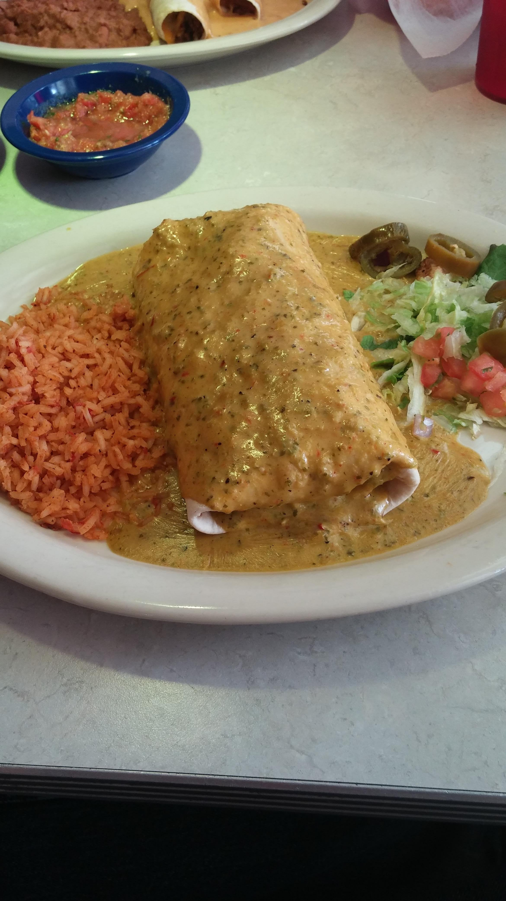

Chicken Fajita Burrito

Description
Found this super healthy and macro friendly recipe on Instagram
Ingredients
Chicken:
- 2 Chicken breasts (approx. 5oz. or 140-145g)
- Season with salt, pepper, paprika, garlic powder, and chili powder
- 1/2 tsp Olive Oil or Spray
Burrito:
- 1/2 medium Red Bell Pepper, chopped
- 1/2 medium Green Bell Pepper, chopped
- 1 small Red Onion, chopped
- 1/3 cup Fat Free Sour Cream (or Greek Yogurt for extra protein
- 1/4 cup low fat cheese
- 1 tbsp Hot Sauce (sriracha is the original recipe but I’m thinking peri-peri)
- 2 large Tortillas (wheat)
- 1/4 tsp Olive Oil or Spray
Steps
- Rub chicken in oil and then rub in spices (salt, pepper, paprika, chili powder, and garlic powder).
- Cook on medium heat 6 minutes per side. Chop into pieces and set to the side
- Spray pan with oil. Add red pepper, green pepper, salt, and onion to pan. Sauté until soft.
- Add sour cream or yogurt, cheese, hot sauce, and chicken pieces to pan. Mix well on low heat.
- Put mixture in tortillas and wrap up. Toast wrap on both sides.